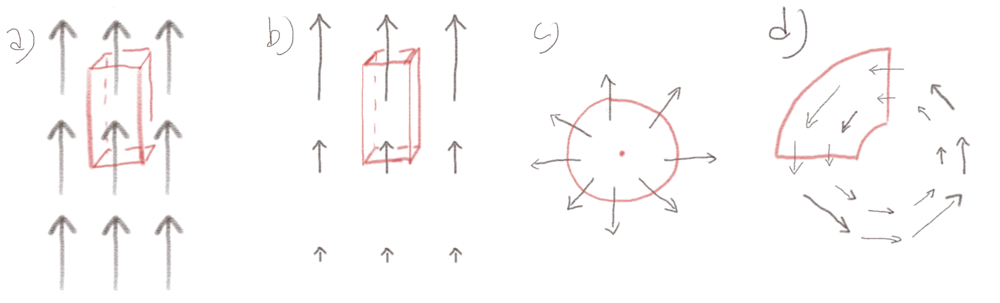
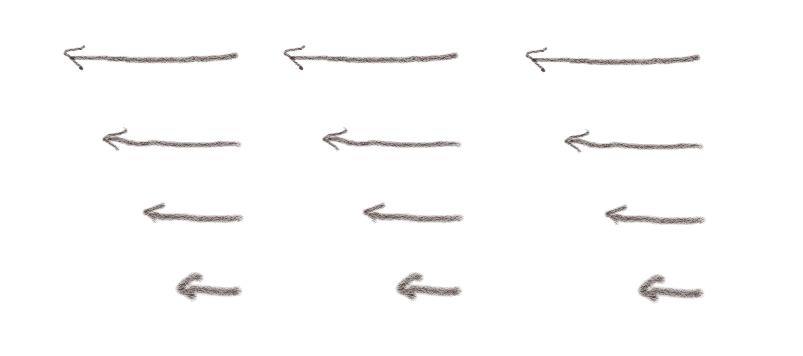
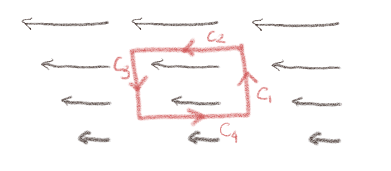
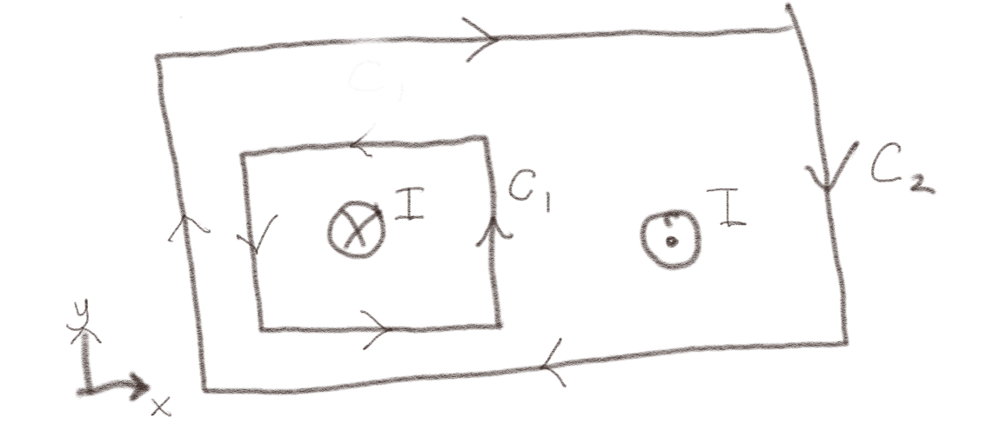
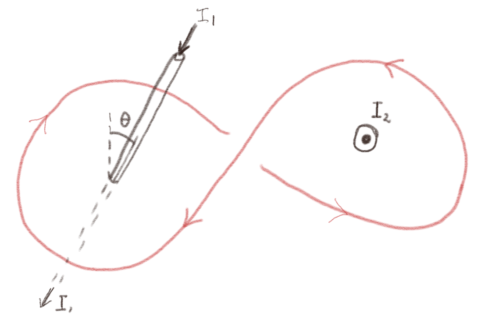
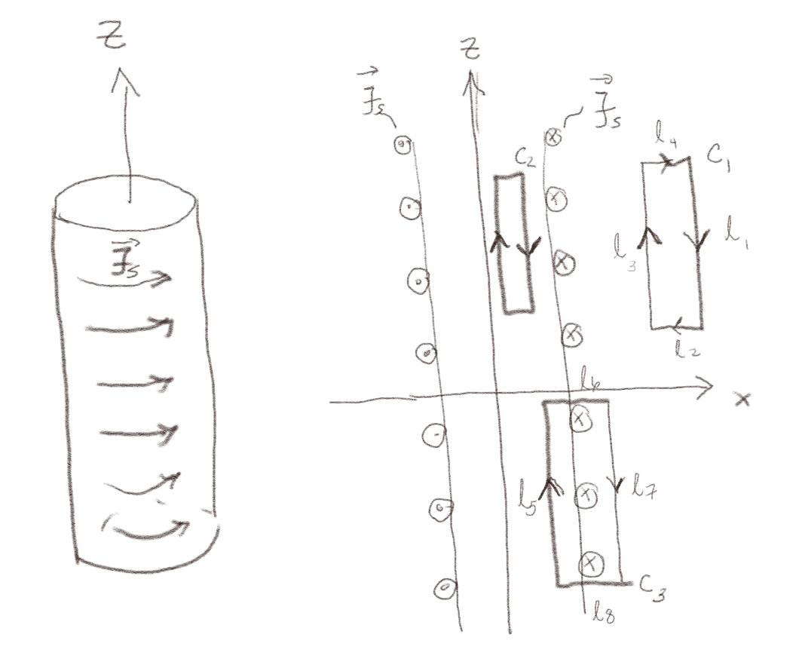
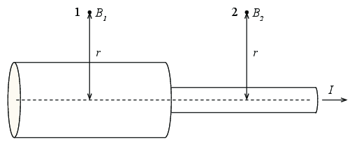

(Lærebok 11.1)
Figuren viser fire forskjellige magnetfelt. Er fluksen som går gjennom flaten \( S \) positiv, negativ, eller null?

a) Hva er fluksen i tilfelle (a)?
0
Fluksen er gitt som \( \Phi = \int_S \vec{B} \cdot \d \vec{S} \). Kun den øvre og den nedre flaten vil bidra, fordi feltet er parallelt med de andre overflatene. Det ser ut som om det kommer omtrent like mye fluks inn av den nederst som det går ut av den øverste. Det ser derfor ut som om netto fluks er null.
b) Hva er fluksen i tilfelle (b) ?
\( \Phi_B > 0 \)
Fluksen er gitt som \( \Phi = \int_S \vec{B} \cdot \d \vec{S} \). Kun den øvre og den nedre flaten vil bidra, fordi feltet er parallelt med de andre overflatene. Fluksen \( \Phi_1 = B_1 S_1 \) ut av den øvre flaten vil være positiv fordi feltet og overflatenormalen peker i samme retning. Fluksen \( \Phi_2 = B_2 S_2 \) ut av den nedre flaten vil være negativ, fordi overflatenormalen peker nedover, mens feltet peker oppover. Den øvre og den nedre overflatene er like store, mens feltet er større ved den øvre enn ved den nedre. Derfor er \( |\Phi_2 | < |\Phi_1| \) og fluksen ut av flaten \( S \) vil være positiv.
c) Hva er fluksen i tilfelle (c)?
\( \Phi_B > 0 \)
Fluksen er gitt som \( \Phi = \int_S \vec{B} \cdot \d \vec{S} \). La oss anta at feltet \( \vec{B} \) er sylindrisk symmetrisk og peker rett utover i radiell retning. Overflaten er en sylinderoverflate. Da vil fluksen gjennom sylinderflaten være \( \Phi = \int_S \vec{B} \cdot \d \vec{S} = 2 \pi r L B_r > 0 \), hvor vi har antatt at \( \vec{B} = B_r(r) \rhat \).
d) Hva er fluksen i tilfelle (d)?
\( \Phi_B = 0 \)
Her ser det ut som om feltet har sylindersymmetri og har formen \( \vec{B} = B_{\Phi}(r) \phihat \). Det vil kun være de to delene av overflatene som er parallelle med radius fra sylinderaksen som vil bidra til fluksen, da de øvrige overflatene vil være parallelle med feltet. For et sylindersymmetrisk felt vil fluksen inn gjennom en overflate \( S_1 \) og ut gjennom en overflate \( S_2 \) være like store og med motsatt fortegn, slik at netto fluks blir 0.
e) Hvilke magnetfelt er fysisk mulige?
Netto fluks ut av enhver overflate må være null, så det er kun tilfelle (a) og (d) som representerer fysisk mulige magnetfelt.
a) Er feltet \( \vec{B} = x \x - y \y \) et fysisk mulig magnetfelt?
Ja
Vi finner divergensen til \( \vec{B} \): $$ \begin{equation} \nabla \cdot \vec{B} = \frac{\partial B_x}{\partial x} + \frac{\partial B_y}{\partial y} = 1 - 1 = 0 \tag{1} \end{equation} $$ Siden divergensen er null er det et mulig magnetfelt.
b) Er feltet \( \vec{B} = B_0 (z/a) \z \) et mulig magnetfelt?
Nei
Divergensen til \( \vec{B} \) er: $$ \begin{equation} \nabla \cdot \vec{B} = \frac{\partial B_x}{\partial x} + \frac{\partial B_y}{\partial y} + \frac{\partial B_z}{\partial z} = B_0/a \tag{2} \end{equation} $$ Siden divergensen ikke er null med mindre \( B_0 = 0 \) er det ikke er fysisk mulig magnetfelt.
(Lærebok 11.2)
Figuren viser et statisk magnetfelt \( \vec{B} \) i et område \( v \) i rommet.

a) Kan området \( v \) være tomt?
D
Amperes lov på differensial form sier at \( \nabla \times \vec{B} = \mu_0 \vec{J} \). Hva er \( \nabla \times \vec{B} \) i dette tilfellet?
Hmmm. Vi kan bruke en definisjon av curl til å estimere curl i dette tilfellet. Komponenten av curl i \( x \)-retningen er gitt som $$ \begin{equation} \left( \nabla \times \vec{B} \right)_x = \lim_{\Delta S \rightarrow 0}\frac{\oint_C \vec{B} \cdot \d \vec{l}}{\Delta S} \tag{3} \end{equation} $$ hvor \( \Delta S \) har overflatenormal i \( x \)-retningen. Hvis vi velger en liten, kvadratisk krets i positiv retning som i figuren:

ser vi at linjeintegralet langs \( C_1 \) og \( C_3 \) blir null. Linjeintegralet langs \( C_2 \) blir større enn langs \( C_4 \). Linjeintegralet langs \( C_2 \) blir positivt og langs \( C_4 \) blir negativt. Netto blir integralet positivt. Denne overflaten har flatenormal ut av planet til figuren. Det betyr at det vil være en strømtetthet som er peker opp av planet.
Du kan også regne ut curl ved å anta at feltet f.eks. har formen \( \vec{B} = -B_0 y/a \x \) og finne \( \nabla \times \vec{B} = B_0/a \z \).
b) Er feltet \( \vec{B} = B_0 (z/a) \z \) et mulig magnetfelt?
Nei
Divergensen til \( \vec{B} \) er: $$ \begin{equation} \nabla \cdot \vec{B} = \frac{\partial B_x}{\partial x} + \frac{\partial B_y}{\partial y} + \frac{\partial B_z}{\partial z} = B_0/a \tag{4} \end{equation} $$ Siden divergensen ikke er null med mindre \( B_0 = 0 \) er det ikke er fysisk mulig magnetfelt.
(Lærebok 11.2.1)
Figuren viser to strømsløyfer \( C_1 \) og \( C_2 \) og to ledninger begge med en strøm \( I \). En strøm som går inn i planet (kryss) en en strøm som går ut av planet (prikk).

a) Hva er \( \oint_C \vec{B} \cdot \d \vec{l} \) for \( C_1 \)?
\( -\mu_0 I \)
Vi løser dette ved å anvende Amperes lov $$ \begin{equation} \oint_C \vec{B}\cdot \d \vec{l} = \mu_0 I_S \; , \tag{5} \end{equation} $$ hvor \( I_S \) er strømmen gjennom en overflate \( S \) som utspennes av sløyfen \( C \). Overflatenormalen til \( S_1 \) som utspennes av \( C_1 \) peker opp fra planet, mens strømmen peker inn i planet, slik at \( I_S = -I \) og integralet blir \( -\mu_0 I \).
Figuren viser en strømsløyfe \( C \) og to ledninger. En ledning med en strom \( I_2 \) som kommer ut gjennom planet til figuren og en ledning med en strøm \( I_2 \) som har en vinkel \( \theta \) med planet til figuren. Anta et \( C \) ligger i planet til figuren.

a) Hva er \( \oint_C \vec{B} \cdot \d \vec{l} \)?
\( \mu_0 (I_1 + I_2 ) \)
Vi løser dette ved å anvende Amperes lov $$ \begin{equation} \oint_C \vec{B}\cdot \d \vec{l} = \mu_0 I_S \; , \tag{6} \end{equation} $$ hvor \( I_S \) er strømmen gjennom en overflate \( S \) som utspennes av sløyfen \( C \). Vi ser at strømmen \( I_2 \) går samme vei som overflatenormalen til \( S \), og det gjør også \( I_1 \). Merk at vinkelen \( \theta \) her ikke har noen betydning. (Hvis vi i stedet hadde hatt oppgitt \( \vec{J} \) måtte vi tatt hensyn til \( \vec{J} \cdot \d \vec{S} \).). Vi finner derfor at netto strøm gjennom overflaten \( S \) er \( I_1 + I_2 \) og dermed er $$ \begin{equation} \oint_C \vec{B}\cdot \d \vec{l} = \mu_0 (I_1 + I_2)\; , \tag{7} \end{equation} $$
(Lærebok 11.2.2)
Hva hvis vi i stedet ser på et system som består av en (uendelig) lang sylindrisk leder, men hvor det går en strøm med overflatestrømtetthet \( \vec{J}_s \) kun på overflaten av sylinderen i azimuthal retning: \( \vec{J}_s = J_0 \phihat \) som vist i figuren. Vi skal nå diskutere symmetrien til feltet inne i sylinderen.

a) Ut fra symmetri, hvilke variable \( r \), \( \phi \), \( z \) vil \( \vec{B} \) kunne avhenge av: \( \vec{B} = \vec{B}(r,\phi,z) \)?
Kun \( r \)
b) Kan \( \vec{B} \)-feltet ha en komponent \( B_r(r) \) i radiell retning?
Nei
Vi kan bruke Gauss lov for magnetfelt for å finne \( B_r(r) \). Vi lager en Gauss-flaten i form av en sylinder. Fluksen inn og ut av endeflatene vil være like store men ha motsatt fortegn fordi \( B_z \) kun avhenger av \( r \) og ikke av \( z \). Fluksen ut av en sylinderflate med radius \( r \) og lengde \( L \) vil være $$ \begin{equation} \int_S \vec{B} \cdot \d \vec{S} = 2 \pi r L B_r = 0 \tag{8} \end{equation} $$ Derfor er \( B_r = 0 \) overalt.
c) Kan \( \vec{B} \)-feltet ha en komponent \( B_{\phi}(r) \) i azimuthal retning?
Nei
Vi kan finne feltet i azimuthal retning ved å anvende Amperes lov på en sirkel med radius \( r \) rundt sylinderen. Det vil ikke gå noen strøm gjennom denne sirkelen og \( B_{\phi} \) vil være konstant på sirkelen siden \( r \) er konstant på sirkelen. Amperes lov gir dermed $$ \begin{equation} \oint_C \vec{B} \cdot \d \vec{l} = 2 \pi r B_{\phi} = 0 \tag{9} \end{equation} $$ Dermed er \( B_{\phi} = 0 \) for alle \( r \). Merk at du her også kunne argumentert med Biot-Savarts lov, men du må da være nøye med symmetri-argumentene dine.
d) Vi anvender Amperes lov på kretsen \( C_1 \) i \( xz \)-planet. Hva forteller det oss om \( B_z \)?
\( B_z \) er konstant utenfor sylinderen.
Amperes lov sier at $$ \begin{equation} \oint_{C_1}\vec{B} \cdot \d \vec{l} = \mu_0 I_1 . \tag{10} \end{equation} $$ Det går ingen strøm gjennom \( C_1 \) slik at integralet må være null. Vi deler kretsen \( C_1 \) opp i lengdene \( l_1 \) til \( l_4 \) som vist i figuren. Siden \( B_r = 0 \) vil integralene langs \( l_2 \) og \( l_4 \) være null. Vi setter at \( l_1 \) er ved \( r = r_1 \) og \( l_3 \) er ved \( r = r_3 \). Da får vi at $$ \begin{equation} \oint_{C_1}\vec{B} \cdot \d \vec{l} = -B_z(r_1)l_1 - B_r l_2 + B_z(r_3)l_3 + B_r l_4 = 0 \; . \tag{11} \end{equation} $$ Vi setter inn at \( B_r = 0 \) og får at \( B_z(r_1)l_1 = B_z(r_3)l_3 \) hvor \( l_1 = l_3 \) slik at \( B_z(r_1) = B_z(r_3) \). Det betyr at \( B_z \) er konstant.
e) Anvend Amperes lov på kretsen \( C_1 \). Vi kan anta at \( |\vec{B}|\rightarrow 0 \) når \( r \rightarrow \infty \). Hva forteller Amperes lov anvendt på \( C_1 \) om \( \vec{B} \) utenfor sylinderen?
\( B_z = 0 \)
Som vi så av forrige oppgave, vet vi at \( B_z \) er konstant. Siden den går mot null langt unna, må den være null utenfor sylinderen. Amperes lov anvendt på denne kretsen forteller oss kun dette. Men vi vet fra før at det to andre komponentene \( B_r \) og \( B_{\phi} \) må være null. Dermed vet vi at \( \vec{B} = B_z \z = 0 \) utenfor sylinderen.
f) Hva forteller Amperes lov anvendt på krets \( C_2 \) om \( \vec{B} \)?
\( B_z \) er konstant innen i sylinderen.
Vi kan her anvende samme argument som for krets \( C_1 \) siden det ikke går noen strøm gjennom \( C_2 \) og symmetriargumentene er de samme. Vi ser derfor at \( B_z \) er konstant inne i sylinderen.
g) Anvend Amperes lov på krets \( C_3 \) for å finne \( \vec{B} \) inne i sylinderen.
\( B_z = \mu_0 J_s \)
Vi kan nå anvende Amperes lov på kretsen \( C_3 \): $$ \begin{equation} \oint_{C_3} \vec{B} \cdot \d \vec{l} = \mu_0 I = \mu_0 J_s l_5 \; , \tag{12} \end{equation} $$ hvor strømmen \( I \) gjennom kretsen er \( J_s l_5 \). Det vil kun være \( l_5 \) som bidrar til linje-integralet. Langs \( L_6 \) og \( l_8 \) er \( B_r = 0 \) og langs \( l_7 \), som er utenfor sylinderen, er \( \vec{B} = 0 \). Vi finner derfor at \( B_z(r_5)l_5 = \mu_0 J_s l_5 \) og derfor at \( B_z = \mu_0 J_s \) inne i sylinderen.
(Lærebok 11.2.4)
En leder består av to sylindriske, massive deler med samme akse som vist i figuren. Det går en tidsuavhengig strøm \( I \) gjennom lederen. Vi måler størrelsen (magnituden) til det magnetiske feltet i punktene 1 og 2 som vist i figuren. Du kan anta at punktene 1 og 2 er langt fra hverandre slik at feltet i punktet 1 ikke påvirkes av strømmen i den tynne sylinderen, og feltet i punkt 2 ikke påvirkes av feltet i den tykke sylinderen.

a) Hvilket utsagn er korrekt?
(A)
Vi antar at vi har sylindrisk symmetri med \( z \)-aksen langs sylinderaksen. Det magnetiske feltet vil da ikke ha noen \( B_r \) komponent, fordi hvis \( B_r \) er forskjellig fra null vil divergensen av \( B_r \) gjennom en sylindrisk overflate være forskellig fra null, og det kan den ikke være. Det magnetiske feltet vil heller ikke ha noen \( B_z \) komponent. Det kan vi se fra Biot-Savarts lov, hvor det magnetiske feltet vil være normalt til strømelementene og alle strømelementene vil være parallelle med \( z \)-aksen. Vi vil derfor kun ha en \( \phi \)-komponent av \( B \)-feltet, og denne kan kun avhenge av \( r \). Den kan ikke avhenge av \( \phi \) fordi vi har rotasjonssymmetri om \( z \)-aksen og den kan ikke avhenge av \( z \) fordi vi antar at sylinderen er lang i \( z \)-retningen.
Vi kan da anvende Amperes lov på en sirkel \( C \) med radius \( r \) om sylinder-aksen. Vi finner da at: $$ \begin{equation} \oint_C \vec{B} \cdot \d \vec{l} = 2 \pi r B_{\phi}(r) = \mu_0 I \; \Rightarrow \; B_{\phi} = \frac{\mu_0 I}{2 \pi r} \tag{13} \end{equation} $$ Strømmen \( I \) er den samme gjennom begge sylindrene, så derfor er \( B_1 = B_2 \).
b) Hva vil svaret være hvis begge punktene \( 1 \) og \( 2 \) ligger i en avstand \( r \) som er mindre enn radius til den minste sylinderen?
\( B_1 < B_2 \)
I dette tilfellet vil strømmen være avhengig av hvor mye strøm som går gjennom et tverrsnitt med radius \( s \). Vi antar at \( J = I/A \) er uniformt fordelt på tverrsnittet til lederen. Da blir strømmen gjennom tverrsnitt 1 lik \( I_1 = J_1 \pi r^2 = I \pi r^2/A_1 \), mens strømmen gjennom tverrsnitt 2 blir \( I_2 = J_2 \pi r^2 = I \pi r^2/A_2 \). Amperes lov gir oss at $$ \begin{equation} \oint_{C_i} \vec{B}_i \cdot \d \vec{l} = 2 \pi r B_{i,\phi} = \mu_0 I_i \tag{14} \end{equation} $$ hvor \( I_i \) er strømmen i de to tverrsnittene \( i = 1,2 \). Vi ser derfor at $$ \begin{equation} B_1 = \frac{\mu_0 I_1}{2 \pi r} = \frac{\mu_0 \pi r^2 I}{2 \pi r A_1} = \frac{\mu_0 r I }{2 A_1} \tag{15} \end{equation} $$ og tilsvarende $$ \begin{equation} B_2 =\frac{\mu_0 r I }{2 A_2} \tag{16} \end{equation} $$ Fordi \( A_2 < A_1 \) blir derfor \( B_2 > B_1 \).
c) Hva blir svaret hvis punktene \( 1 \) og \( 2 \) ligger i en avstand \( r \) som er mindre enn radius til den største sylinderen, men større en radius til den minste sylinderen?
\( B_1 < B_2 \)
Magnetfeltet \( B_2 \) blir her det samme som i første oppgave ovenfor: $$ \begin{equation} B_2 = \frac{\mu_0 I}{2 \pi r} \tag{17} \end{equation} $$ mens magnetfeltet \( B_1 \) blir det samme som i andre oppgave ovenfor: $$ \begin{equation} B_1 = \frac{\mu_0 r I }{2 A_1} = \frac{mu_0 I}{2 \pi r} \frac{\pi r^2}{A_1} \tag{18} \end{equation} $$ Her er \( \pi r^2 < A_1 \) slik at \( B_1 < B_2 \).